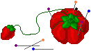
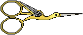
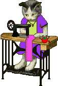

Welcome to the Craft Room
Fiber arts have eaten my brain, this is fine.
Things to come on this page: handspun yarn, crochet, tailoring, embroidery, weaving, beading, and whatever else i can get my grubby hands on.
For now, have some miscellaneous resources I haven't made dedicated pages for yet:
- asldfasdlf by Andrea Lui
- [COLLECTION] Sarah's Hand Embroidery Tutorials (immaculate embroidery stitch dictionary and a number of tutorials and patterns)
- [PATTERN] DMC (mostly embroidery and cross stitch but a few other crafts too, and mostly free!)
- [COLLECTION] Antique Pattern Library
- [COLLECTION] Dress Patternmaking
Ergonomics
Embroidery
Sewing
